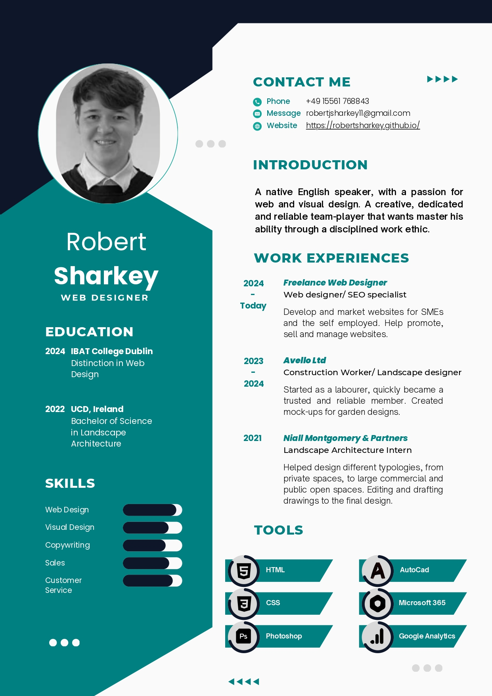
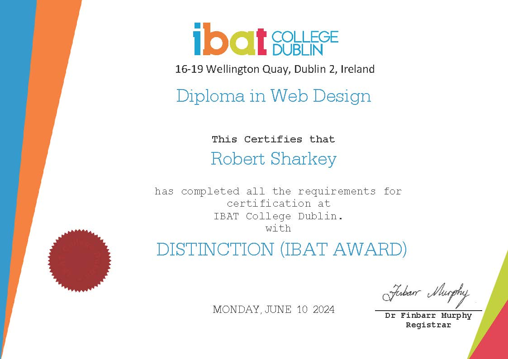

Experience
This page consists of my work experience and my most recent achievement of completing my diploma in IBAT College Dublin with a distinction.

CV
In a nutshell...
- Detail orientated: I focus on the details and quality of projects and ensure the best quality of work is always produced.
- Adaptability: I adapt to situations quick and pick up most things quickly.
- Focus: I have the ability to zone into my task and complete the job before the deadline.

EDUCATION
What I've Learned...
- Programming: I have gained skill in programming languages such as HTML and CSS.
- Visual design: A main focus of the course was to design intuitive and appealing pages to simulate other professional websites.
- Useful tools: I have learned a variety of useful tools when it comes to web design such as Google Analytics and the Amazon Associate program.